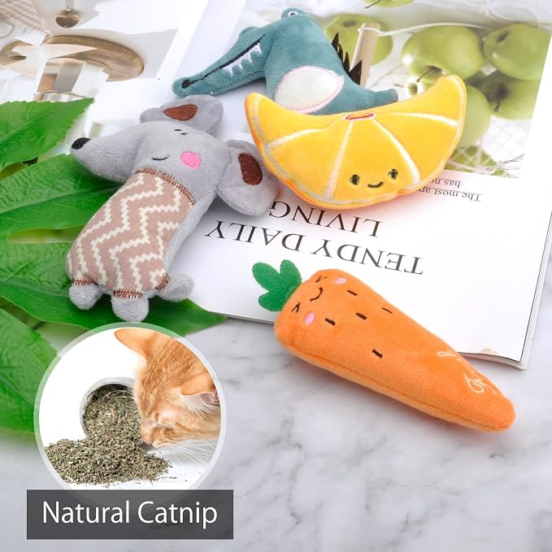
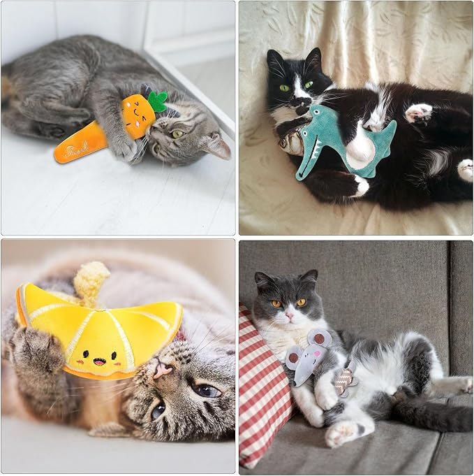

Små leksaker som väcker kattens nyfikenhet
Om produkten
Ge din katt något roligt att leka med i detta set med fyra mjuka kattleksaker med kattmynta. Setet innehåller en mus, en dinosaurie, en morot och en citron.
Leksakerna kan öppnas med kardborreband, vilket gör det möjligt att byta ut kattmyntan när det behövs. De är mjuka och lätta för katten att leka med, bära och busa med.
Pris
99 kr
Produktinformation
- Bra för: Mental stimulans, fysisk utveckling, tuggning och hälsovård
- Typ av husdjursleksak: Plysch
- Doft: Kattmynta
- Vikt: Ca 10 g per styck
- Produkten innehåller: 4 st kattleksaker
- Tvättbar: 30 °C
- Artikelnr: 61234